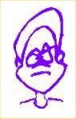
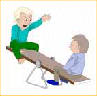

|  |

Frank and Fat Freddy are real good friends. They like to pass time together playing on their favorite apparatus in the park, the see-saw (a.k.a. the teeter-totter). They especially enjoy showing off their math talents to their friends and families by calculating how far from the fulcrum each needed to sit in order to balance the board horizontally.
One day Frank said, "I weigh 90 pounds, and my buddy weighs an additional 4/9 of my weight."
Then Fat Freddy, who obviously has made too many trips to his local fast food restaurant, said, "If I sit 27 decimeters from the fulcrum, I can tell Frank just where he should sit on his side so that we will be evenly balanced."
What is that distance?
| Comments? Send e-mail. | Back to top | Go back to Home Page | Go back to Contents |